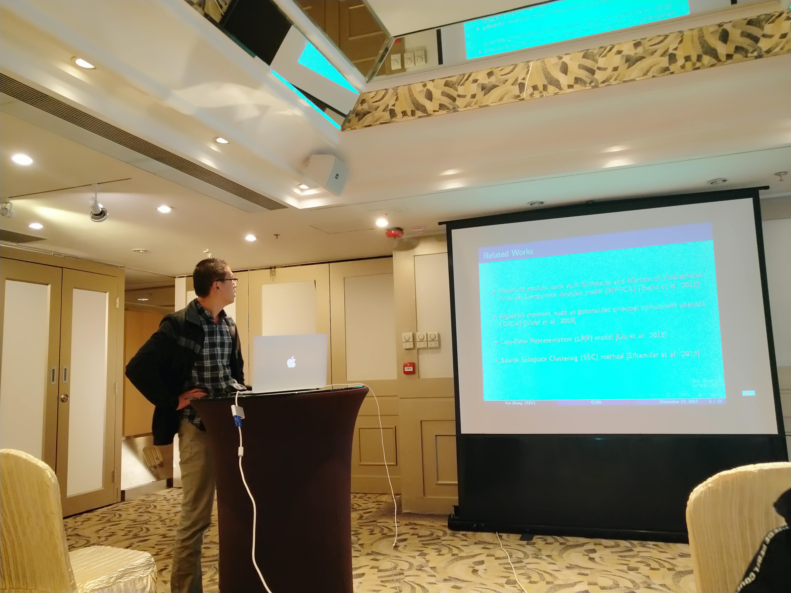

|
 |
Dr. Yao Zhang
The guy is a populace.
Email: jaafar_zhang @ 163.com
Here is my cv.
|
Biography
Yao Zhang was born in a rural village near Weishan Lake in northwestern Jiangsu, China, where he spent his childhood and teenage years, completing his primary and secondary education. After graduating from high school, he moved to Shenzhen, China, where he earned both his B.S. and M.S. degrees in Mathematics from Shenzhen University, graduating in June 2014 and June 2019, respectively. During this time, he worked at a semiconductor company near Lihu Lake in Wuxi from July 2014 to June 2016, while also managing a street stall as a side business. In the fall of 2022, he married a doctor, marking a new chapter in his personal life. He later completed his Ph.D. in Astronomy at the University of Chinese Academy of Sciences in September 2024 under the supervision of Dr. Long Xu, after gaining research experience as an assistant at the Chinese Academy of Sciences. He is currently a Postdoctoral Researcher at Ningbo University.
Research Interests
Maxwell's Equations: \(\nabla \cdot \mathbf{E} = \frac{\rho}{\epsilon_0}, \nabla \cdot \mathbf{B} = 0, \nabla \times \mathbf{E} = -\frac{\partial \mathbf{B}}{\partial t}, \nabla \times \mathbf{B} = \mu_0 \mathbf{J} + \mu_0 \epsilon_0 \frac{\partial \mathbf{E}}{\partial t}\). They describe the interaction between the electric field \(\mathbf{E}\), magnetic field \(\mathbf{B}\), and charge distribution.
Schr\( \mathop{\rm o}\limits^{\text{..}} \)dinger Equation: \(i\hbar \frac{\partial \psi}{\partial t} = \hat{H} \psi\), where \(\psi\) is the wave function, and \(\hat{H}\) is the Hamiltonian operator, describing the energy state of the system.
Einstein Field Equations: \(R_{\mu\nu} - \frac{1}{2}Rg_{\mu\nu} = \frac{8\pi G}{c^4}T_{\mu\nu}\), where \(R_{\mu\nu}\) is the Ricci tensor, \(g_{\mu\nu}\) is the metric tensor, and \(T_{\mu\nu}\) is the energy-momentum tensor.
Navier-Stokes Equations: \(\rho\left(\frac{\partial \mathbf{v}}{\partial t} + \mathbf{v} \cdot \nabla \mathbf{v}\right) = -\nabla p + \mu \nabla^2 \mathbf{v} + \mathbf{f}\). These equations encompass the conservation of mass and momentum, and describe external force effects.
Artificial Intelligence in Gravity and Quantum Theory.
News
|